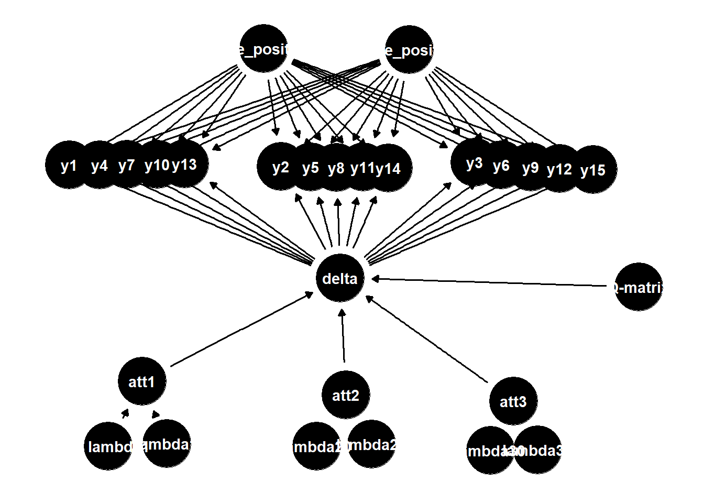

library(tidyverse)
library(cmdstanr)
library(bayesplot)
library(posterior)
library(ggdag)
library(dagitty)
set.seed(12345)
bern_dist <- function(prob_value)(
rbinom(n = 300, size = 1, prob = prob_value)
)
y <- tibble(
y1 = bern_dist(prob = .7),
y2 = bern_dist(prob = .74),
y3 = bern_dist(prob = .88),
y4 = bern_dist(prob = .90),
y5 = bern_dist(prob = .64),
y6 = bern_dist(prob = .61),
y7 = bern_dist(prob = .79),
y8 = bern_dist(prob = .89),
y9 = bern_dist(prob = .81),
y10 = bern_dist(prob = .54),
y11 = bern_dist(prob = .60),
y12 = bern_dist(prob = .46),
y13 = bern_dist(prob = .37),
y14 = bern_dist(prob = .3),
y15 = bern_dist(prob = .65),
) |>
rowid_to_column() |>
rename(
studentid = rowid
)As I am continuing to grow in understanding and conducting bayesian networks, this page and series may change in the future. -JP
Okay, I will be the first to state that I am not an expert in the field of conducting psychometric models, Bayesian networks, Bayesian analyses, but I have been struggling to find any blog posts about conducting a bayes net with latent variables that uses the programming language Stan. The purpose of this post is to walk through Stan and some bayes net terminology to get a basic understanding of some psychometric models conducting using Bayesian inference.
To get started, make sure you follow the detailed instructions on installing RStan. I know if using Mac, make sure to also download Xcode so that Stan will work correctly. For this post, I will be doing all my programming in R, while calling on Stan to conduct the Markov Chain Monte Carlo (MCMC) sampling. Maybe a future post will follow this tutorial using PyStan or Cmdstanpy but there are just more readily available tools using R so I will be using R instead. Additionally, I will be creating dichotomous data that will represent an education assessment where a 1 indicates that a student has answered the item correctly and a 0 indicates they did not answer the item correctly. The model will also include three latent attributes/skills/variables where a 1 would indicate that the student has mastered the skill and a 0 would indicate that they do not have mastery of the skill.
While I will be discussing bayes net through an educational measurement lens, bayes net can be used outside of education to show that individuals have skills that are not directly measured. Instead of items on an assessment, tasks that capture each skill can be assessed. Before walking through some bayes net terminology, it is important to note that this model is simply for educational purposes. Components of the psychometric models I will be writing about (e.g., Diagnostic Classification Model (DCMs) and bayes net) require expert opinion. For example, DCMs and bayes net models require expert opinions on the assignment of items to skills. Additionally, bayes net models require expert opinion on the priors for the lambda (\(\lambda\)) parameters.
Since there is different opinions on using different terms, I am going to stick to the following terms.
- Node = Observed variable
- Parent = The node that has an arrow directed at another node
- Child = The node that the arrow is directed at from another node
- Edge = Path/arrow between two nodes
- Attribute/Skill = Latent (unobserved/hidden) node
- DAG = Directed Acyclic Graph (visual representation of nodes [similar to path analysis in visualization])
- Q-matrix = A matrix showing the relationship between the assessment items and each attribute/skill, with each row being an item and each column being a skill.
For this introductory post into bayes net, I thought it would be best to create some artificial data and show visually the models I will be planning on creating using R and Stan. I will be using cmdstanr instead of rstan for my Stan computations. The main difference between the two packages is that rstan avoids using R6 classes, while cmdstanr uses R6 classes. If you’d like more information on trade-offs of different object-oriented programming classes, you can read more here. Finally, I will state that while this is introductory to a bayes net model, this post assumes that you have a decent understanding of Bayesian inference.
Getting the Data Set Up
The first thing I am going to do is load in all the necessary libraries that you need. Then I decided to create a function that would create a binomial distribution with a single trial, so essentially a bernoulii distribution. I decided on some random numbers for the probabilities of correct responses to the 15 different items and decided to create some fake studentids for each row. Below is a table to look into the data if you want.
Q Matrix
q_matrix <- tibble(
item_id = map_chr(1:15, ~paste0("y", .x)),
att1 = c(1, 0, 0, 1, 0, 0, 1, 0, 0, 1, 0, 0, 1, 0, 0),
att2 = c(0, 1, 0, 0, 1, 0, 0, 1, 0, 0, 1, 0, 0, 1, 0),
att3 = c(0, 0, 1, 0, 0, 1, 0, 0, 1, 0, 0, 1, 0, 0, 1)
)
q_matrix |>
react_table()Okay, now on to the Q-matrix. As previously stated, I am creating this q-matrix to be as simple as possible. This means that in a realistic scenario, you would either want to use a structural learning algorithm to see what nodes have edges to our three latent nodes, or you should probably have experts on your latent attributes to declare what items measure what latent attribute.
Above, I created a q-matrix that follows a pattern where each attribute has 5 items that correspond to that attribute. The table above allows you to search which items correspond to each attribute by typing 1 into the filter bar above each column.
Attribute Profile Matrix
If we only wanted to examine how the posterior distributions compare to each student and their responses, then I would only need to have my student data and the Q-matrix. However, I also want to put students into latent classes. Because I want to put students into latent classes, I also have to create an attribute profile matrix. I am going to create this matrix by creating every possible combination of skills, which will create every potential latent class. Then I will just add each row as a numbered class. Below is the final matrix created for 3 skills.
skills <- 3
skill_combo <- rep(list(0:1), skills)
alpha <- expand.grid(skill_combo)
alpha <- alpha |>
rename(
att1 = Var1,
att2 = Var2,
att3 = Var3
) |>
mutate(
class = seq(1:nrow(alpha)),
.before = att1
)
alpha |> react_table()Note: Latent classes are different from our latent nodes/attributes/skills. The matrix created above (alpha) is a matrix where each row is a different latent class and each column corresponds to each of the skills.
So now we have everything to build our bayes net model. Before we get to that, I do want to visually show the three models I will be creating in this series.
Models
Naive Bayes
naive_dag <- dagitty('dag {
bb="0,0,1,1"
"1 - lambda1" [latent,pos="0.175,0.076"]
"Q-matrix" [pos="0.874,0.402"]
att1 [latent,pos="0.220,0.209"]
att2 [latent,pos="0.488,0.182"]
att3 [latent,pos="0.709,0.169"]
delta [latent,pos="0.481,0.421"]
false_positive [latent,pos="0.572,0.888"]
lambda1 [latent,pos="0.252,0.082"]
lambda20 [latent,pos="0.450,0.076"]
lambda21 [latent,pos="0.522,0.081"]
lambda30 [latent,pos="0.679,0.068"]
lambda31 [latent,pos="0.741,0.069"]
true_positive [latent,pos="0.380,0.890"]
y1 [pos="0.124,0.652"]
y10 [pos="0.240,0.653"]
y11 [pos="0.511,0.648"]
y12 [pos="0.770,0.645"]
y13 [pos="0.276,0.654"]
y14 [pos="0.544,0.646"]
y15 [pos="0.814,0.643"]
y2 [pos="0.403,0.649"]
y3 [pos="0.658,0.657"]
y4 [pos="0.164,0.652"]
y5 [pos="0.442,0.648"]
y6 [pos="0.693,0.652"]
y7 [pos="0.200,0.653"]
y8 [pos="0.476,0.647"]
y9 [pos="0.732,0.648"]
"1 - lambda1" -> att1
"Q-matrix" -> delta
att1 -> delta
att2 -> delta
att3 -> delta
delta -> y1
delta -> y10
delta -> y11
delta -> y12
delta -> y13
delta -> y14
delta -> y15
delta -> y2
delta -> y3
delta -> y4
delta -> y5
delta -> y6
delta -> y7
delta -> y8
delta -> y9
false_positive -> y1
false_positive -> y10
false_positive -> y11
false_positive -> y12
false_positive -> y13
false_positive -> y14
false_positive -> y15
false_positive -> y2
false_positive -> y3
false_positive -> y4
false_positive -> y5
false_positive -> y6
false_positive -> y7
false_positive -> y8
false_positive -> y9
lambda1 -> att1
lambda20 -> att2
lambda21 -> att2
lambda30 -> att3
lambda31 -> att3
true_positive -> y1
true_positive -> y10
true_positive -> y11
true_positive -> y12
true_positive -> y13
true_positive -> y14
true_positive -> y15
true_positive -> y2
true_positive -> y3
true_positive -> y4
true_positive -> y5
true_positive -> y6
true_positive -> y7
true_positive -> y8
true_positive -> y9
}
')
ggdag(naive_dag) + theme_dag()
The first model I will go over is essentially a naive bayes model; however, naive bayes models do not correct for what I have labeled as true positive and false positive probabilities. These are priors that will be discussed in the next post. This model mimics a deterministic inputs, noisy “and” gate (DINA) model. Essentially, the model assumes that each student has mastered all skills in order to correctly respond to an assessment item. See here for an excellent post about the DINA model and what the bayes netmodel will compare to in this series
DCM
The DCM is somewhat difficult to visualize. Based on the model in the blog post above, the skills are not determined by priors and instead of a delta parameter, the parameter is already created in the data. I will talk shortly about that when conducting the DCM. Additionally, while the other two models have priors for true positives and false positives, the DCM includes similar parameters with prior distributions; the slip (essentially the student slipped up and made a mistake even though they have the skills) parameter and the guess (got the answer correctly but do not have the necessary skills) parameter. Those priors are different from the ones created for the bayes net models so we’ll talk about those next post.
Bayes Net
bayes_net <- dagitty('dag {
bb="0,0,1,1"
"1 - lambda1" [latent,pos="0.175,0.076"]
"Q-matrix" [pos="0.874,0.402"]
att1 [latent,pos="0.220,0.209"]
att2 [latent,pos="0.488,0.182"]
att3 [latent,pos="0.709,0.169"]
delta [latent,pos="0.481,0.421"]
false_positive [latent,pos="0.572,0.888"]
lambda1 [latent,pos="0.252,0.082"]
lambda20 [latent,pos="0.450,0.076"]
lambda21 [latent,pos="0.522,0.081"]
lambda30 [latent,pos="0.679,0.068"]
lambda31 [latent,pos="0.741,0.069"]
true_positive [latent,pos="0.380,0.890"]
y1 [pos="0.124,0.652"]
y10 [pos="0.240,0.653"]
y11 [pos="0.511,0.648"]
y12 [pos="0.770,0.645"]
y13 [pos="0.276,0.654"]
y14 [pos="0.544,0.646"]
y15 [pos="0.814,0.643"]
y2 [pos="0.403,0.649"]
y3 [pos="0.658,0.657"]
y4 [pos="0.164,0.652"]
y5 [pos="0.442,0.648"]
y6 [pos="0.693,0.652"]
y7 [pos="0.200,0.653"]
y8 [pos="0.476,0.647"]
y9 [pos="0.732,0.648"]
"1 - lambda1" -> att1
"Q-matrix" -> delta
att1 -> att2
att1 -> delta
att2 -> att3
att2 -> delta
att3 -> delta
delta -> y1
delta -> y10
delta -> y11
delta -> y12
delta -> y13
delta -> y14
delta -> y15
delta -> y2
delta -> y3
delta -> y4
delta -> y5
delta -> y6
delta -> y7
delta -> y8
delta -> y9
false_positive -> y1
false_positive -> y10
false_positive -> y11
false_positive -> y12
false_positive -> y13
false_positive -> y14
false_positive -> y15
false_positive -> y2
false_positive -> y3
false_positive -> y4
false_positive -> y5
false_positive -> y6
false_positive -> y7
false_positive -> y8
false_positive -> y9
lambda1 -> att1
lambda20 -> att2
lambda21 -> att2
lambda30 -> att3
lambda31 -> att3
true_positive -> y1
true_positive -> y10
true_positive -> y11
true_positive -> y12
true_positive -> y13
true_positive -> y14
true_positive -> y15
true_positive -> y2
true_positive -> y3
true_positive -> y4
true_positive -> y5
true_positive -> y6
true_positive -> y7
true_positive -> y8
true_positive -> y9
}
')
ggdag(bayes_net) + theme_dag()Lastly, the bayes net model is similar to the first model; however, now there are edges between the 3 skills. Other than that, nothing else has changed. In the next post I will be estimating the first bayes net model and doing some posterior checks to see how the model works.